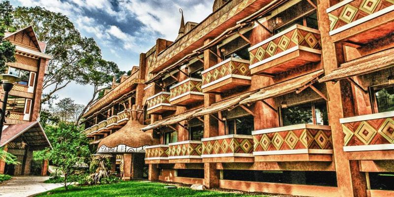

Xetulul Este parque cuenta con atracciones y emocionantes juegos mecánicos para los más grandes y los pequeños, espectaculares shows ambulantes, tiendas de regalos y diversidad de restaurantes para todos los gustos. Sus diferentes plazas brindan un escenario arquitectónico donde se muestra el origen y la historia de Guatemala, así como los países europeos que han influenciado la cultura guatemalteca. El parque permanece abierto de las 10:00 a las 18:00 horas de jueves a domingo, y salvo fechas especiales funciona todos los días, con capacidad para 12,000 visitantes.

Xocomil En el Parque Acuático Xocomil puede disfrutar los más impresionantes juegos acuáticos en medio de una exuberante vegetación y ambiente que muestra la imponente arquitectura Maya, asimismo lo más moderno en equipo, instalaciones y comodidades de un parque Acuático de clase Mundial. En 1998 la Asociación Mundial de Parques Acuáticos (WWA) le otorgó un reconocimiento como el mejor Parque Acuático del mundo en la categoría de Innovación. Xocomil ha recibido a más de 4 millones de visitantes, gracias a sus espectaculares y emocionantes atracciones. Tiene capacidad para atender a 8,000 visitantes simultáneamente.
Los hostales del IRTRA Los Hostales del IRTRA son un hermoso y moderno complejo hotelero ubicado en San Martín Zapotitlan. Cuenta con 669 habitaciones, lo que lo convierte en el hotel más grande de Guatemala, y uno de los más grandes y bellos de Centroamérica. En Los Hostales podrá gozar y disfrutar de un placentero descanso,y recrearse con diferentes actividades como: Mini Golf de 18 hoyos “Los Tarros Country Club”, Áreas Deportivas, y Música en vivo por las noches. Todos ellos cuentan con instalaciones y un servicio de alta calidad, con diferentes tarifas que se ajustan al gusto, presupuesto y estilo de vida de cualquiera.
Dino Park Es un parque de diversiones donde podrá convivir con animatronics de dinosaurios en sus ambientes naturales. Con más de 25 dinosaurios animados, juegos interactivos, fauna y vegetación, tienda de souvenirs, restaurante y mucho más. La tecnología con las que son fabricados los dinosaurios es impresionante, ya que respiran, se mueven y algunos incluso caminan. Además de los reptiles, el parque también cuenta con la primera figura humana animatronic en Guatemala, se trata de Steven Spielberg quien recibe a los invitados en la recepción. Este innovador parque cuenta con atracciones para chicos y grandes, en donde podrán pasar horas disfrutando de estar cerca de los dinosaurios y observar colecciones únicas de las películas de Jurassic Park. El parque se encuentra ubicado en el km. 179 a Santa Cruz Muluá, Retalhuleu. Está abierto de 9:00 a 18:00 horas todos los días (a excepción del martes, que permanece cerrado) y la entrada tiene un costo de Q50 para niños y adultos a partir de 12 años, de 11 a 5 años Q40, de 4 a 2 años Q20 y los más pequeños entran gratis.
El Museo de Juguetes Quien visite el museo de juguetes ubicado en Santa Cruz Muluá, sin duda recordará aquellos personajes admirados durante su niñez, mientras los menores encontrarán a sus personajes favoritos de la televisión y el mundo del cine. El museo Xulik (que significa ’ya llegaste’ en idioma k’iche’) está ubicado en el kilómetro 179.3 de la ruta de Retalhuléu a Quetzaltenango. Su propietario, Ricardo Alejos, asegura que con su hermano Horacio lograron convertir un sueño en realidad. Después de muchos años de coleccionar juguetes surgió la idea de abrir un lugar donde todos pudieran apreciarlos. El lugar permanece abierto de viernes a domingo se cobran Q15 por el ingreso. Mensualmente el museo recibe la visita de 2,000 personas de diferentes partes del país y del extranjero.
Sitio arqueológico Takalij Abaj Takalik Abaj es un yacimiento arqueológico de la cultura maya prehispánica. Se encuentra en el municipio de El Asintal, Es un sitio arqueológico muy importante, más antiguo que Tikal mismo. Aún es un misterio el por qué fue abandonado súbitamente por sus habitantes. La importancia de este lugar es prominente. La revista National Geographic detalla en una edición del 2,004, el hallazgo que hicieran arqueólogos en el lugar: la tumba real más antigua del impero maya. Esta fue encontrada en un observatorio astronómico construído hace 1,800 años.